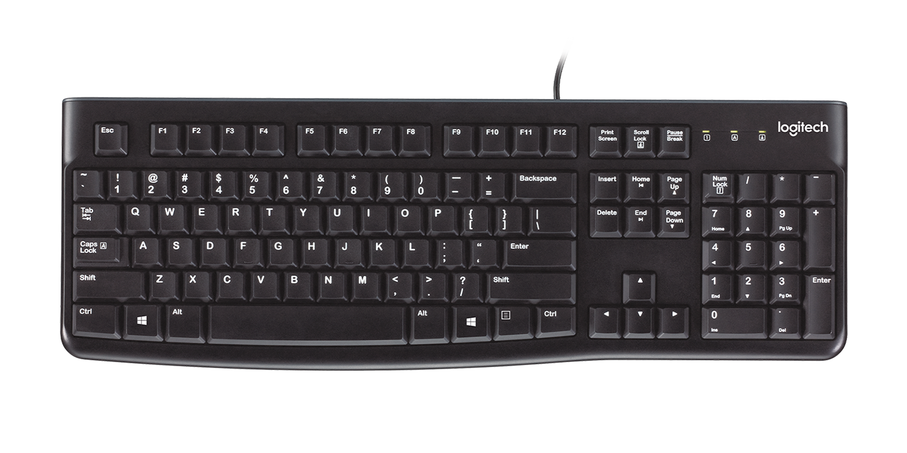

CPU: AMD Ryzen 9 7950X 4.5 GHz 16-Core Processor
- Offers a high core count of 16 , which is crucial for serious gaming as it allows for better multitasking and improved performance in demanding games that utilize multiple cores effectively.
- With a high clock speed (4.5 GHz base clock and 5.7 GHz boost clock), this processor ensures fast and responsive gameplay, delivering smooth performance even in the most demanding games. The boost clock provides additional power for burst tasks, enhancing overall gaming experience.
- The Zen 4 microarchitecture utilized in this processor provides improved instructions per clock (IPC) performance, offering better overall gaming performance compared to previous generations. It delivers enhanced efficiency and power management, optimizing the gaming experience while keeping energy consumption intact.
CPU COOLER: Noctua NH-L9a-AM4 33.84 CFM CPU Cooler
- The high fan RPM range (600 - 2500 RPM) allows for efficient cooling and better heat dissipation, which is crucial for a powerful gaming PC. It helps to prevent overheating and ensures that the CPU operates at optimal temperatures, maintaining performance during intense gaming sessions.
- The low noise level (14.8 - 23.6 dB) is essential for a serious gamer who wants an immersive and uninterrupted gaming experience. With minimal noise output, the cooler ensures a quiet environment, allowing the gamer to focus on the game without distractions or annoying fan noise.
- The compact height ( 37mm) is ideal for gaming PC builds where space is a concern. With a low-profile design, it fits easily into smaller cases, providing compatibility and flexibility in selecting the desired computer case. This allows the client to build a powerful gaming PC with high-performance components while still maintaining a compact form factor.
Motherboard: Asus ROG STRIX B650-A GAMING WIFI ATX AM5 Motherboard
- Features the AM5 socket, which is compatible with the latest AMD processors. This ensures that the client's PC will be equipped with a powerful CPU capable of delivering excellent gaming performance.
- With support for DDR5 memory, this motherboard allows the client to take advantage of faster memory speeds, such as DDR5-6000 and DDR5-6400. This results in improved system responsiveness and smoother gameplay, enhancing the overall gaming experience.
- Equipped with a 2.5 Gb/s Ethernet port, providing a high-speed wired network connection. This is beneficial for serious gamers as it offers lower latency and more stable network connectivity compared to wireless options, allowing for optimal online gaming performance.
Memory: Gigabyte AORUS 32 GB (2 x 16 GB) DDR5-5200 CL40 Memory
- This high-speed DDR5-5200 Mhz memory ensures faster data transfer rates, allowing for quicker loading times and smoother gameplay. It maximizes the gaming experience by reducing latency and enhancing overall system responsiveness.
- With 32 GB of memory, the client can easily handle demanding games and multitasking without experiencing slowdowns or performance bottlenecks. It provides ample room for running multiple applications simultaneously, ensuring a smooth gaming experience.
- The CAS latency is an important specification that determines the delay between a command being issued to the memory and when the data is actually available. This memory has a CAS latency of 40 indicates faster data access and retrieval, contributing to reduced lag and improved gaming performance.
Storage: Kingston NV2 1 TB M.2-2280 PCIe 4.0 X4 NVME Solid State Drive
- The PCIe 4.0 X4 interface offers a high-speed data transfer rate, allowing for faster loading times in games and quicker access to game files, resulting in a smoother gaming experience.
- With a large storage capacity of 1 TB, this solid-state drive (SSD) provides ample space for installing numerous games, ensuring that the client can have a diverse gaming library without worrying about running out of storage.
- The NVME (Non-Volatile Memory Express) feature enhances the SSD's performance by reducing latency and increasing input/output operations per second (IOPS), resulting in reduced loading times and improved responsiveness during gameplay.
Video Card: Asus DUAL GeForce RTX 4070 12 GB Video Card
- The generous amount of video memory (12 GB GDDR6X Memory) allows for smooth and lag-free gameplay, especially when running games at high resolutions and utilizing advanced graphical settings.
- The dual-fan cooling system effectively dissipates heat generated during intense gaming sessions, ensuring that the graphics card remains cool and operates at optimal temperatures, which is crucial for maintaining consistent performance.
- Features an impressive core clock speed of 2475 MHz, which can be further boosted to 2505 MHz (boost clock speed) when necessary. This high clock speed ensures that the graphics card can handle demanding gaming scenarios, deliver exceptional performance, and maintain high frame rates, resulting in a smooth and immersive gaming experience.

Case: Cougar MX330-X ATX Mid Tower Case
- Suitable for accommodating high-performance components, providing ample space for powerful hardware as they are required for a top-notch gaming experience.
- This case allows for the installation of long video cards (up to 350mm), ensuring compatibility with the latest and most advanced graphics cards in the market. This feature is crucial for delivering smooth gameplay and exceptional visual quality at high resolutions.
- The inclusion of a power supply shroud helps in concealing and organizing cables, resulting in improved airflow and a cleaner interior layout. This promotes efficient cooling of components and minimizes the risk of overheating, ensuring optimal performance during intense gaming sessions.
Power Supply: Thermaltake Smart 500 W 80+ Certified ATX Power Supply
- Provides ample power for your gaming needs, ensuring that your components receive a stable and reliable power supply. This wattage range is suitable for high-performance gaming PCs, allowing you to run the latest games and demanding applications without any power-related issues.
- With an 80+ certified efficiency rating, the Thermaltake Smart 500 W power supply operates efficiently, minimizing energy waste and reducing heat generation. Not only does this help in keeping your system cool but also ensures that your power supply is reliable and durable, providing a consistent power delivery for optimal gaming performance.
- Features two PCIe 6+2-pin connectors, which are essential for connecting high-end graphics cards. These connectors provide the necessary power to your graphics card, allowing you to experience smooth gameplay and high-resolution visuals in the latest games. With two PCIe connectors, you have the flexibility to upgrade to a more powerful graphics card in the future if desired.
Monitor: Asus TUF Gaming VG27AQ 27.0" 2560 x 1440 165 Hz Monitor
- Has a remarkable 165 Hz refresh rate, allowing for incredibly smooth gameplay. This ensures that fast-paced action sequences in the latest games are displayed with exceptional clarity and minimal motion blur, providing an immersive and responsive gaming experience.
- With a rapid 1ms response time, this monitor minimizes the delay between your actions and the on-screen response, resulting in faster and more accurate gameplay. This feature is crucial for serious gamers who require precise timing and quick reactions to gain a competitive edge in fast-paced games.
- Supports FreeSync and G-Sync compatibility, which eliminates screen tearing and stuttering. This synchronization technology ensures that the monitor's refresh rate matches the output of the graphics card, delivering fluid and tear-free visuals. This feature significantly enhances the overall gaming experience, making it ideal for gamers who demand smooth and seamless gameplay.

Keyboard: Logitech K120 Wired Standard Keyboard
- Offers a comfortable typing experience, allowing the gamer to enjoy long gaming sessions without discomfort or fatigue.
- Comes with adjustable tilt legs, enabling the gamer to find the optimal typing angle for improved ergonomics and comfort during extended gaming sessions.
- With a spill-resistant design, this keyboard provides added durability and protection against accidental spills, ensuring the gamer can continue gaming without worrying about damage to the keyboard.
Mouse: Corsair Harpoon RGB Wired Optical Mouse
- Offers a maximum DPI of 6000, which means it has a high level of sensitivity and precision. This is crucial for serious gamers who require accurate and quick movements, especially in fast-paced games where every millisecond matters.
- RGB features including customizable RGB lighting, allows gamers to personalize their gaming setup and create an immersive atmosphere. Not only does this add a visually appealing element but also enhances the gaming experience by providing visual cues and indicators for in-game events or actions.
Headset: Asus TUF Gaming H3 Headset
- Has a wide frequency response range of 20 Hz to 20 kHz, ensuring accurate and detailed audio reproduction. This is important for the client as it allows them to fully immerse themselves in the gaming experience, hearing all the subtle sounds and nuances in the game they are playing.
- With an impedance of 32 Ω, this headset is optimized for efficient power delivery from the gaming PC. This means that the client will be able to achieve loud and clear audio without the need for an external amplifier or audio interface.
- Built-in microphone allows for clear and crisp communication with teammates during multiplayer gaming sessions. This is crucial for the client as it enables effective teamwork and coordination, enhancing their overall gaming experience.
Router: Ubiquiti EdgeRouter 4
- With a maximum power consumption of just 13 Watts, it operates efficiently and helps reduce energy costs. This makes it an environmentally friendly option and an economical choice for users concerned about power consumption.
- Fanless Design: The absence of a fan not only contributes to a quieter environment but also eliminates the risk of fan failure, improving overall reliability and longevity.
Ethernet Cable: CAT8 Ethernet Cable, Outdoor&Indoor, 10FT Heavy Duty Weatherproof Network Cable
- The CAT8 cable is designed to deliver high-speed data transmission with its superior bandwidth capabilities. It supports data transfer rates of up to 40 Gbps, making it ideal for demanding applications that require fast and reliable connectivity.
- The 10ft length of the cable provides a practical and convenient solution for shorter distance connections.